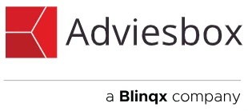

Adviesbox.nl
Adviesbox, a Blinqx company: financiële planning, advies, bemiddeling en administratie
Adviesbox, tot begin 2013 bekend onder de namen Hypobox en Planningbox, ondersteunt de financieel adviseur bij het opstellen van een financieel advies. Het berekenen van de maximale leencapaciteit en daarna een financieringsopzet met lastenoverzicht maak je snel en eenvoudig.
Alle fiscale en sociale cijfers zijn verwerkt en worden dagelijks automatisch bijgewerkt. Van alle geldverstrekkers zijn producten, rentes en voorwaarden opgenomen; van verzekeraars worden de premies exact berekend en de actuele aanvraagformulieren volledig gevuld.
Adviesbox heeft een logische opbouw met tabbladen. Je stelt de software eenmalig in op je adviespraktijk: je kiest de adviesonderdelen, maatschappijen en rapportsoorten die passen bij je advieswijze.

Wat kun je met Adviesbox?
Klantprofiel volgens de Wft
Aan de hand van de adviesaanleiding stel je een volledig klantprofiel op, met de richtlijnen van de Wft als basis. Dat profiel gebruik je bij het vormen en motiveren van het advies.
Scenario's en tekorten
Vanuit de inventarisatie en het klantprofiel zie je direct of er tekorten ontstaan, met scenario's voor aflossen, overlijden, arbeidsongeschiktheid, werkloosheid en pensioen.
Elektronisch aanvragen
Vraag een hypotheek, bankgarantie of taxatie elektronisch aan via HDN of rechtstreeks bij de aanbieder. Adviesbox is volledig HDN-gecertificeerd.
Rapporten
Kies uit standaardrapporten: inventarisatierapport, kort rapport, hypotheekrapport en financieel plan. Rapporten pas je naar wens aan.
Netto besteedbaar inkomen
Een van de invalshoeken bij het advies, met gebruik van de geschatte uitgaven van het Nibud.
Hypotheekvergelijker
Vergelijkt alle hypotheeklabels over de hele looptijd op rente, voorwaarden en maximale verstrekking, inclusief automatische rentedaling. Zo vergelijk je op totale kosten in plaats van alleen op de beginrente.
Module Klantdossier
Klantdossier is een uitbreiding van Adviesbox voor het opbouwen van het klantdossier: een uitgebreide administratie, taken en notities, een productoverzicht met alle lopende producten en portefeuillemeldingen die je waarschuwen als je aandacht nodig is. De Wft verplicht je het hele adviestraject te documenteren; elke klant krijgt automatisch een klantmap voor documenten en correspondentie.
Met de online inventarisatie in je eigen huisstijl vult je klant zelf zijn gegevens en klantprofiel in. Met de extra module Brondata haalt de klant zijn gegevens op bij verschillende overheidsinstanties, via een beveiligde verbinding.
Overstappen naar Adviesbox
Met de overstapservice stap je eenvoudig over: tijdens een persoonlijk intakegesprek komen installatie, server of cloud, koppelingen en de samenwerking met je serviceprovider aan bod. Loopt het contract met je huidige leverancier nog, dan gebruik je Adviesbox tot de einddatum gratis, met een maximum van 6 maanden (volgens adviesbox.nl).
Wil je eerst proberen? Vraag een gratis proeflicentie aan: je ontvangt per e-mail een licentiecode voor 14 dagen Adviesbox.
Koppelingen
Vanuit Adviesbox vraag je aan bij geldverstrekkers en verzekeraars. Daarnaast koppelt Adviesbox onder meer met Advieskeuze.nl (reviewplatform), ANVA CRM, Assistant, EDR Creditservice (kredietwaardigheid), Elements / eBlinqx en de Nationale Hypotheekbond (signalering). Het actuele overzicht staat in de productkaart efficiënt bemiddelen.
Ondersteuning
Voor Adviesbox heb je een licentiecode nodig; die ontvang je na een proeflicentie of bestelling. Een vraag, probleem of suggestie meld je in Adviesbox via Help > Melding maken; daarna wordt contact met je opgenomen. Er zijn trainingen, waaronder een gratis starttraining, en je kunt een persoonlijk consult inplannen.
Handleidingen
- Adviesbox Installatiehandleiding.pdf (pdf)
- Herinstallatie met behoud van gegevens v3.0.pdf (pdf)
- Inventarisatie_Adviesbox.pdf (pdf)
Helpcenter Adviesbox
Alle 360 artikelen uit het Adviesbox-helpcenter, per rubriek. Ze zijn ook doorzoekbaar via de zoekfunctie van deze site.
Algemeen (34)
- Een extra gebruiker is duurder dan verwacht. Hoe zit dat?
- Hoe gebruik ik de "Versturen naar adviseur" knop in de Online Inventarisatie?
- Hoe gebruik ik hintteksten en verdiepingsvelden voor meer duidelijkheid?
- Hoe neem ik contact op met de finance afdeling voor factuurvragen?
- Hoe nodig ik online een klant uit voor inventarisatie (klantprofiel)?
- Hoe pas ik de marktwaarde aan in het hypotheekvoorstel?
- Hoe sla ik een hypotheekaanvraag op als PDF en verzend ik deze?
- Hoe stel ik een vraag over factuur, rekening of aanmaning?
- Hoe verstuurt een klant de inventarisatie naar de adviseur?
- Hoe verwijder ik een advies zonder de hele klant te wissen?
- Hoe voeg ik toelichting toe aan het adviesrapport bij afdrukken?
- Hoe vul ik spaarrekeningen in tijdens online inventarisatie?
- Hoe werkt het versturen van een online inventarisatie en het verwerken van klantwijzigingen?
- Hoe wordt overdrachtsbelasting berekend bij erfpacht?
- Ik heb een bedrijf overgenomen en wil het lopende contract direct opzeggen. Kan dat?
- Ik heb een gebruiker verwijderd, maar word nog steeds gefactureerd. Hoe kan dit?
- Ik wil de tenaamstelling op mijn factuur aanpassen. Hoe regel ik dat?
- Is de 30%-regeling beschikbaar in Adviesbox?
- Mijn factuur is meer gestegen dan het gecommuniceerde indexatiepercentage. Waarom?
- Servicedesk beperkt bereikbaar
- Waar stuur ik opzeggingen naartoe?
- Waar vind ik ontvangen documenten in Klantdossier?
- Waarom is een optie niet overal beschikbaar?
- Waarom kan de netto maandlast hoger zijn dan de bruto maandlast?
- Waarom nemen de netto maandlasten van mijn hypotheek jaarlijks toe?
- Waarom verandert de netto maandlast tussen jaar 4 en 5?
- Waarom verschilt de WW-duur bij een gelijk arbeidsverleden?
- Waarom verschilt het AOW-bedrag tussen Adviesbox, pensioenoverzicht en SVB-opgave?
- Waarom wordt bij zelfstandigen het inkomen van het laatste jaar getoond en niet het gemiddelde van drie jaar?
- Wat betekenen 'passend' en 'verantwoord' in een advies?
- Wat betekenen afkortingen bij afwijzingen?
- Wat te doen bij een foutmelding dat het dossier open staat bij een andere gebruiker?
- Welke eisen gelden voor wachtwoorden bij Online Inventarisatie?
- Welke toetscombinaties kan ik gebruiken?
Implementatie & onboarding (1)
Training & educatie (28)
- Hoe bereken ik de gewogen gemiddelde toetsrente?
- Hoe bereken ik de maximale hypotheek in Adviesbox?
- Hoe exporteer ik klantgegevens naar Excel of batch-bestanden?
- Hoe gebruik ik de hypotheekvergelijker?
- Hoe gebruik ik de rapportgenerator?
- Hoe neem ik de hypotheek over bij een echtscheiding?
- Hoe stel ik de 'stoppen met werken' leeftijd in voor een klant?
- Hoe voer ik een echtscheidingsscenario in waarbij één partner de woning en hypotheek overneemt?
- Hoe voer ik een meeneemhypotheek in?
- Hoe voer ik een overbruggingskrediet in Adviesbox in?
- Hoe voer ik een WGA-gat verzekering in Adviesbox in?
- Hoe voer ik pensioengegevens in tijdens de inventarisatie?
- Hoe vul ik leningdelen uit het verleden in voor de berekening van de maximale hypotheek?
- Hoe werkt automatische rentedaling doorrekenen bij hypotheekrisicoklasse?
- Hoe wijzig ik sjablonen of teksten in adviesrapporten?
- Hoe wissel ik een advies uit tussen Adviesbox Online en Classic?
- Houd Adviesbox altijd up-to-date
- Waarom hanteert NHG een toetsrente van 5% bij korte looptijden?
- Waarom is het NHG-provisiebedrag lager dan verwacht bij een hogere hypotheek?
- Wanneer kies ik voor oversluiten of omzetten van een hypotheek?
- Wanneer ontstaat een negatief fiscaal voordeel bij hypotheekrenteaftrek?
- Wanneer verwijs ik een klant bij een trainingsverzoek door?
- Wanneer worden nieuwe NHG- en hypotheeknormen geïmplementeerd?
- Wat moet ik doen bij stoppen met werken in mijn pensioenadvies?
- Wat zijn de NHG normen voor 2026?
- Wat zijn de nieuwe NHG- en hypotheeknormen voor 2026?
- Welke factoren beïnvloeden de woonquote en toegestane jaarlast?
- Welke opleidingen en kennisdeling zijn mogelijk via Blinqx, Impact en DFO?
Storingen (10)
- Adviesbox kan blijven hangen
- Adviesbox Server niet bereikbaar
- Adviesbox update onbereikbaar
- Hoe verloopt de afhandeling van meldingen via eBlinqx Hypotheekadvies?
- Storing Adviesbox Classic: foutmeldingen in startersadvies en hypotheekdashboard
- Storing bij HDN
- Storing bij HDN: aanvragen worden tijdelijk niet verwerkt
- Storing: HDN aanvragen tijdelijk niet beschikbaar
- Wat te doen bij een verlopen certificaatmelding bij het opstarten van Adviesbox?
- Wij zijn momenteel niet telefonisch bereikbaar i.v.m. een storing bij onze telefoondienstverlener.
Productupdates & roadmap (57)
- Adviesbox 2026.3 is beschikbaar
- Hoe update ik Adviesbox na een release met databaseconversie?
- Nieuwsoverzicht Adviesbox
- Release notes versie 2021.3
- Release notes versie 2021.3
- Release notes versie 2021.4
- Release notes versie 2021.4
- Release notes versie 2021.5
- Release notes versie 2021.5
- Release notes versie 2022.2
- Release notes versie 2022.2
- Release notes versie 2022.3
- Release notes versie 2022.3
- Release notes versie 2022.4
- Release notes versie 2022.4
- Release notes versie 2022.5
- Release notes versie 2022.5
- Release notes versie 2022.6
- Release notes versie 2022.6
- Release notes versie 2022.7
- Release notes versie 2022.7
- Release notes versie 2022.8
- Release notes versie 2022.8
- Release notes versie 2022.9
- Release notes versie 2022.9
- Release notes versie 2023.2
- Release notes versie 2023.2
- Release notes versie 2023.3
- Release notes versie 2023.3
- Release notes versie 2023.4
- Release notes versie 2023.4
- Release notes versie 2023.5
- Release notes versie 2023.5
- Release notes versie 2023.6
- Release notes versie 2023.6
- Release notes versie 2023.7
- Release notes versie 2023.7
- Release notes versie 2023.8
- Release notes versie 2023.8
- Release notes versie 2023.9
- Release notes versie 2023.9
- Release notes versie 2024.3
- Release notes versie 2024.3
- Release notes versie 2024.4
- Release notes versie 2024.4
- Release notes versie 2024.5
- Release notes versie 2024.5
- Release notes versie 2025.1
- Release notes versie 2025.1
- Release notes versie 2025.2
- Release notes versie 2025.2
- Release notes versie 2026.3 – Adviesbox Classic
- Release notes voor Adviesbox
- Verduurzamingstoolbox van HDN nu beschikbaar in Adviesbox
- Vrijdag 29 mei 2026: geen update mogelijk vanaf 10:00 uur (uitrol release 2026.3)
- Wanneer worden voorwaarden en normen voor het nieuwe jaar in Adviesbox aangepast?
- Wijziging boeterenteberekening Adviesbox per 20 juni 2018
Modules en functionaliteiten (140)
- Box 3 inkomenstoets uitvoeren
- Een bestaand advies als huidige situatie gebruiken in een nieuw voorstel
- Een tweede woning invoeren zonder hypotheekberekening
- Foutmelding 'Kan het bestand niet openen' bij HDN versturen oplossen
- Geen nabestaandenpensioen berekend nadat beide partners AOW-leeftijd hebben bereikt
- Hoe beheer ik HDN-aansluitingen en certificaten via het HDN beheerportaal?
- Hoe bekijk ik een rentedaling bij aflosvormen in het tabblad Motivering?
- Hoe bepaal ik het toetsinkomen met het UWV Verzekeringsbericht?
- Hoe deel ik een adviesrapport via Uw Kluis en laat ik de klant digitaal ondertekenen?
- Hoe deel ik een klantprofiel via UwKluis in eBlinqx Hypotheekadvies?
- Hoe exporteer ik adviesgegevens naar een XML-bestand?
- Hoe gebruik ik een eerder advies als basis voor een nieuw advies?
- Hoe geef ik aan of iemand rookt bij de personalia-inventarisatie?
- Hoe geef ik aan wanneer iemand gestopt is met roken?
- Hoe geef ik AOW-kortingsjaren in bij verblijf in het buitenland?
- Hoe geef ik buitenlands inkomen op in Adviesbox?
- Hoe geef ik een WGA-gatverzekering op, ook via de werkgever?
- Hoe geef ik een WIA-uitkering op als inkomstenbron?
- Hoe geef ik het overgangsrecht aan voor huurders of inwonenden?
- Hoe geef ik Verkoop onder voorwaarden of constructie op bij een woning?
- Hoe herken ik extra uitgaven na pensioen?
- Hoe kan ik het bedrag van de 13e maand aanpassen?
- Hoe kan ik meer dan drie adviezen bewaren?
- Hoe komt het dat mijn maandlasten lager uitvallen?
- Hoe kopieer ik een motivering van het ene voorstel naar het andere?
- Hoe kopieer ik een motivering van voorstel 2 naar voorstel 1?
- Hoe lees ik brondata in via Online Inventarisatie?
- Hoe los ik een ontbrekend object (onderpand) op bij een HDN kredietaanvraag?
- Hoe los ik foutmeldingen bij leningdelen in woning en lening op?
- Hoe los ik HDN-statusproblemen en foutmeldingen op?
- Hoe maak ik alle tabbladen zichtbaar in Inventarisatie - Huidige situatie?
- Hoe maak ik meerdere voorstellen binnen één adviesdossier?
- Hoe pas ik de motivering aan na het versturen van een aanvraag?
- Hoe pas ik de motivering aan na het versturen van een aanvraag?
- Hoe pas ik de omschrijving van het advies aan?
- Hoe pas ik de pensioenleeftijd aan in Adviesbox?
- Hoe pas ik de rente aan in het rentescenario?
- Hoe pas ik een geboortedatum aan in een advies?
- Hoe pas ik vragen aan in de online inventarisatie?
- Hoe registreer ik een ZZP-inkomen bij inventarisatie?
- Hoe registreer je overgangsrecht bij huur naar eigen woning?
- Hoe schakel ik de AdviesboxHdnService uit?
- Hoe sluit ik dubbele woonlasten uit in het Adviesrapport en pas ik de periode aan?
- Hoe stel ik de benutting van restverdiencapaciteit in bij een AO-scenario?
- Hoe stel ik de juiste berekening van de restantschuld op de passeerdatum in Adviesbox in?
- Hoe stel ik de stoppen-met-werken leeftijd in?
- Hoe stel ik het jaar in wanneer het scenario overlijden start?
- Hoe stel ik hoofdelijk aansprakelijkheid in bij personalia?
- Hoe stel ik rentescenario's zichtbaar na de rentevastperiode?
- Hoe toon ik scenario's voor de tweede aanvrager bij overlijden?
- Hoe verander ik de fiscale box-indeling van de woning van de partner?
- Hoe verstuur ik stukken via HDN als de OK-knop niet zichtbaar is?
- Hoe verwerk ik de 30%-regeling voor expats in Adviesbox?
- Hoe verwerk je dividend en inkomsten uit aanmerkelijk belang in de inventarisatie?
- Hoe verwijder ik een aanvrager en voer ik deze opnieuw in als nieuw advies en klant?
- Hoe verwijder ik het BSN uit de Adviesbox database?
- Hoe voeg ik een oorspronkelijke hypotheek en inschrijvingsbedrag toe?
- Hoe voer ik de auto van de zaak in voor fiscale bijtelling in Adviesbox?
- Hoe voer ik een creditcard als doorlopend krediet in?
- Hoe voer ik een expat of kennismigrant in?
- Hoe voer ik een hybridepolis in bij Kapitaal?
- Hoe voer ik een Krediethypotheek in?
- Hoe voer ik een lijfrente-uitkering in die over enkele jaren begint?
- Hoe voer ik een nabestaandenlijfrente met hoge en lage uitkering in?
- Hoe voer ik een Persoonsgebonden Budget in?
- Hoe voer ik een spaar- of betaalrekening in?
- Hoe voer ik een spaarrekening met enkel kapitaal in?
- Hoe voer ik een studielening inclusief maandlast in?
- Hoe voer ik een SVN verduurzamingslening in?
- Hoe voer ik een tweede woning in bij de huidige situatie?
- Hoe voer ik erfpacht in bij de huidige en nieuwe woning?
- Hoe voer ik fiscale voortzetting in bij de Analyse module?
- Hoe voer ik het bouwjaar van een pand in?
- Hoe voer ik het inkomen van een flexwerker in?
- Hoe voer ik het tweede jaar van een AOV in met een broodfonds?
- Hoe voer ik huurinkomsten in?
- Hoe voer ik inkomen uit een BV in?
- Hoe voer ik IVA en WIA uitkeringen correct in?
- Hoe voer ik meerdere inkomens of dienstverbanden per aanvrager in?
- Hoe voer ik meerdere werkgevers en inkomens in?
- Hoe voer ik mijn partner op als mede-eigenaar van de woning?
- Hoe voer ik te ontvangen alimentatie in?
- Hoe voorkom ik dubbele berekening van eigenwoningreserve?
- Hoe voorkom ik dubbele woonlasten in de rapportage?
- Hoe voorkom ik gegevensverlies bij het wijzigen van de geboortedatum in een bestaand advies?
- Hoe vul ik een Persoonsgebonden Budget in bij overige inkomsten?
- Hoe vul ik het IBAN-rekeningnummer correct in bij een aanvraag?
- Hoe vul ik huuropbrengsten van een tweede woning in?
- Hoe wordt het effect van een rentewijziging berekend?
- Hoe wordt het inkomen berekend bij 'Verantwoorde woonlasten' in de motivatie?
- Hoe wordt het toetsinkomen voor de woonquote bepaald?
- Hoe zorg ik dat buitenlands inkomen wordt meegenomen in de berekening?
- Hoe zorg ik voor stabiele netto lasten bij het vergelijken van voorstellen?
- Is het mogelijk om xml-bestanden van mijnpensioenoverzicht.nl te importeren?
- Kadastrale gegevens invoeren voor een woning
- Kan de restant hoofdsomdatum in de huidige hypotheek situatie een toekomstige datum zijn?
- Motivatie wordt niet overgenomen in rapport: wat kunt u doen?
- Waar houd ik bij inventarisatie rekening mee bij een DGA?
- Waar vind ik het verloop van de automatische gemiddelde rentedaling?
- Waar voer ik de eigenwoningreserve (EWR) in Adviesbox in?
- Waar voer ik een lijfrente-uitkering met een looptijd van 15 jaar in?
- Waar voer ik kinderalimentatie op voor krediettoetsing?
- Waar voer ik nabestaandenpensioen vóór en na AOW in?
- Waar voer ik NHG in bij een bestaande hypotheek?
- Waar voer ik partneralimentatie in?
- Waar voer ik te betalen en te ontvangen alimentatie in Adviesbox in?
- Waar vul ik het percentage loondoorbetaling bij arbeidsongeschiktheid in?
- Waar vul ik servicekosten in voor het onderpand?
- Waar zie ik het effect van rentedaling bij een lager bevoorschottingspercentage?
- Waarom blijft het DGA-inkomen zichtbaar bij arbeidsongeschiktheid?
- Waarom is de Starterslening niet zichtbaar bij de huidige situatie?
- Waarom is het AO- en WW-inkomen te laag bij de berekening?
- Waarom is het fiscaal nadeel bij eigen woning groter sinds 2018?
- Waarom ontstaat fiscaal voordeel pas na enkele jaren?
- Waarom ontvangt een klant bij AO een WGA-uitkering van 70% van het laatstverdiende loon?
- Waarom telt het inkomen van een tweede aanvrager niet mee bij toetsing?
- Waarom toont het rapport geen situatie bij overlijden na pensioenleeftijd?
- Waarom toont Inkomen & Fiscus alleen de AOW-uitkering zonder partnertoeslag?
- Waarom verandert het rentepercentage ondanks uitgeschakelde automatische rentedaling?
- Waarom verschijnt er een negatieve woonlast in het snel overzicht?
- Waarom verschijnt er een opnamebedrag van spaarrekeningen in het overzicht netto besteedbaar inkomen?
- Waarom verschilt de boeteberekening tussen geldverstrekker en Adviesbox?
- Waarom werkt de inkomensvergelijker niet?
- Waarom wordt het flexwerkerinkomen soms niet getoond in het adviesrapport?
- Waarom wordt het inkomen van een flexwerker niet weergegeven in het totaaloverzicht?
- Waarom wordt in de motivatie het huidige inkomen gebruikt en niet het gemiddelde van 3 jaar?
- Waarom wordt inkomen uit flexibele arbeidsrelatie niet meegenomen bij toetsing en acceptatie?
- Waarom wordt winst uit onderneming niet bij het inkomen opgeteld?
- Waarom zie ik de vinkjes 'in dagloon' niet meer bij loon uit arbeid?
- Waarom zie ik een negatief bedrag bij fiscaal voordeel?
- Waarom zie ik het licentienummer van een andere partij?
- Waarom zijn bruto en netto inkomen in het eerste jaar gelijk?
- Wat houdt de tabel Verantwoorde woonlasten in en hoe verschilt deze van Acceptatie?
- Wat kan ik doen als mijn HDN-aansluitnummer niet geregistreerd is in Poortwachter?
- Wat te doen als het Online Inventarisatie wachtwoord ongeldig is?
- Welke AOW-leeftijd hanteert Adviesbox en waarom?
- Welke gevolgen heeft een afwijkende ingangsdatum ten opzichte van saldo hypotheekopgave?
- Welke inkomensverklaringen kunt u invoeren in Adviesbox?
- Welke premiegegevens worden via HDN meegestuurd?
- Woningverdeling bij echtscheiding instellen in Adviesbox
Instellingen en configuratie (45)
- Advieskeuze.nl koppelen aan het systeem
- Agentnummers exporteren vanuit Adviesbox
- Bedrijfslogo toevoegen aan Adviesbox
- E-mailadres aanpassen voor rapportage
- Hoe activeer en gebruik ik de Kompas-koppeling met Adviesbox?
- Hoe beheer ik licenties in Adviesbox?
- Hoe deel ik instellingen centraal in Adviesbox?
- Hoe exporteer en importeer ik een XML-bestand tussen Adviesbox en MyView?
- Hoe installeer ik Adviesbox?
- Hoe kan ik oude HDN berichten automatisch verwijderen?
- Hoe koppel ik Adviesbox aan Nationale Hypotheekbond (NHB)?
- Hoe koppel ik Adviesbox met Advieskeuze.nl en verstuur klantuitnodigingen?
- Hoe koppel ik Adviesbox met Slim?
- Hoe los ik de foutmelding 'Alleen een opgeslagen serviceprovider mag gekozen worden' op?
- Hoe los ik problemen met het converteren van de Adviezendatabase op?
- Hoe maak ik een koppeling met Calcasa in Adviesbox?
- Hoe maak ik een koppeling met de Finly webtool in Adviesbox?
- Hoe pas ik de bemiddelingsvergoeding geldlening aan?
- Hoe schakel ik rapporten via een externe server in?
- Hoe sluit ik boeterente uit van het lastenoverzicht?
- Hoe start ik de AdviesboxHDNService (opnieuw) via Taakbeheer?
- Hoe stel ik bemiddelingskosten of dossiervergoeding in?
- Hoe stel ik BKR-toetsing via EDR in?
- Hoe stel ik de Adviesbox-licentie per gebruiker in via het Windows-register?
- Hoe stel ik de koppeling met Elements in en gebruik ik deze?
- Hoe stel ik een serviceprovider in voor hypotheekaanvragen?
- Hoe stel ik het tussenpersoonnummer (agentnummer) in voor een aanvraag?
- Hoe stel ik rapporten via een externe server in?
- Hoe test ik de verbinding met een SQL database via een UDL bestand?
- Hoe toon ik in het lastenoverzicht alleen de nieuwe situatie voor het 1e jaar?
- Hoe voeg ik een agentnummer toe voor koppelingen in Adviesbox?
- Hoe voeg ik een licentie toe in Adviesbox Classic?
- Hoe voer ik een update uit voor Adviesbox?
- Hoe vul ik het data-inventarisatieformulier voor Adviesbox in?
- Hoe werk ik het licentie-bestand bij in Adviesbox?
- Hoe wijzig ik persoonsgegevens in Adviesbox?
- Hoe zet ik de migratietool in Adviesbox en MasterResult aan?
- Hoe zet ik een Access-database om naar SQL?
- Hoe zet ik rapporten, lay-outs en klantgegevens over naar een laptop?
- Netwerkbron niet beschikbaar (.msi niet gevonden)
- Standaard teksten exporteren in Adviesbox
- Waar vind ik Adviesbox installatiehandleidingen?
- Waar vind ik het emailadressenbestand voor Poliservice?
- Waarom heb ik een Office-pakket nodig voor rapportgeneratie in Adviesbox?
- Welke gebruikersrechten zijn nodig voor Adviesbox?
Probleemoplossing en Technische ondersteuning (43)
- Adviesbox start niet op: "Fout tijdens conversie database" (OLE DB-fout)
- Adviesbox wordt niet goed weergegeven: schermschaal staat te hoog
- Afdrukrapport geeft foutmelding: sjabloon niet gevonden
- Foutmelding 5992: Toegang tot de afzonderlijke kolommen in deze collectie is niet mogelijk
- Foutmelding: Het activeren van node mislukt door HDN Proxy API verbinding
- Hoe herstel ik de Allianz toetsing in Adviesbox?
- Hoe herstel ik een databasefout bij openen van Inkoopcombinatie in Adviesbox?
- Hoe los ik de 'Invalid procedure call or argument' foutmelding op bij afdrukken?
- Hoe los ik de 'Object ondersteunt eigenschap of methode niet'-fout op?
- Hoe los ik de 'Resource not found' error op?
- Hoe los ik de deadlock-foutmelding op in Adviesbox?
- Hoe los ik de foutmelding 'Er is al een exemplaar van TeamViewer actief' op?
- Hoe los ik de foutmelding bij het openen van een offerte op?
- Hoe los ik de melding 'Adviesbox al geopend' op als er geen actieve sessie zichtbaar is?
- Hoe los ik de melding 'Het bestand is reeds geopend' op bij het openen van PDF's in Adviesbox?
- Hoe los ik de melding 'Klasse niet geregistreerd' op?
- Hoe los ik de MSCOMCTL.OCX ImageList foutmelding op?
- Hoe los ik een 0KB Adviezen.md_ bestand op na database compressie?
- Hoe los ik een bijna volle Adviezen-database op?
- Hoe los ik een foutmelding bij verbinding met de Adviezendatabase op?
- Hoe los ik een geblokkeerd adviesrapport door beveiliging op?
- Hoe los ik een geboortenaamfout op bij het uploaden van documenten?
- Hoe los ik een mislukte Adviesbox-update door ontbrekende extract.exe op?
- Hoe los ik een verbindingsfout bij Adviesbox op?
- Hoe los ik een verbindingsprobleem met Adviesbox Online Inventarisatie op?
- Hoe los ik een verbroken databaseverbinding op?
- Hoe los ik foutmelding 'kan geen verbinding maken met update server' op?
- Hoe los ik foutmeldingen op bij het opslaan van een advies in Adviesbox?
- Hoe los ik foutmeldingen op bij opstarten of gebruik van Adviesbox?
- Hoe los ik het probleem 'Node kon niet worden geactiveerd' op?
- Hoe los ik op dat Windows Installer Coordinator blijft hangen bij het klaar maken voor eerste gebruik?
- Hoe los ik problemen op met punt- en komma-notatie bij getallen in Adviesbox?
- Hoe los ik SSO-authenticatiefouten op bij versturen naar Elements?
- Hoe stel ik een alternatieve printer omleiding in via script?
- Hoe update ik een verouderde Adviezendatabase?
- Melding: Bad file name or number
- Oplossing voor dashboard dat over invoervelden valt
- Oplossing voor foutmelding bij FinancieelPlan.dot sjabloon
- Vreemde tekens in Adviesbox (€ in plaats van €, ï in plaats van ï)
- Waar vind ik de Virtual Store locatie en hoe verwijder ik deze veilig?
- Wat te doen bij een Type Mismatch fout bij het samenstellen van een rapport
- Wat te doen bij foutmelding bij openen van overzichten in Adviesbox
- Welke Windows-versie heb ik nodig voor Adviesbox?
Security & Compliance (1)
Rapportages & analytics (1)
Contact
Adviesbox (Blinqx), Harderwijkweg 5b, 2803 PW Gouda · 085 018 00 69 · secretariaat@blinqx.tech
Lees ook
Bron: adviesbox.nl (stand 4 november 2026).